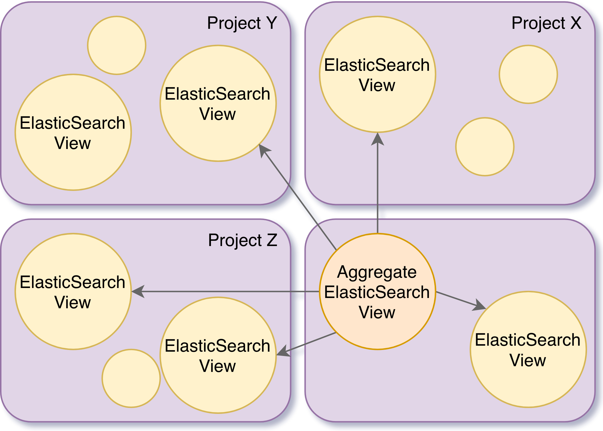

AggregateElasticSearchView
This view is an aggregate of ElasticSearchViews. The view itself does not create any index, but it references the already existing indices of the linked ElasticSearchViews.
From Delta version 1.5.0, AggregateElasticSearchView can point to other AggregateElasticSearchViews.
When performing queries on the _search endpoint, this view will make use of the multi-index query capabilities of ElasticSearch in order to select the indices of every view present on this aggregate view.
If the caller does not have the permission views/query (or from v1.5, the user-defined permission) on all the views defined on the aggregated view, only a subset of indices (or none) will be selected, respecting the defined permissions.

Payload
{
"@id": "{someid}",
"@type": "AggregateElasticSearchView",
"views": [
{
"project": "{project}",
"viewId": "{viewId}"
},
...
]
}
where…
{project}: String - The project, defined as{org_label}/{project_label}, where the{viewId}is located.{viewId}: Iri - The view @id value to be aggregated.
Create using POST
POST /v1/views/{org_label}/{project_label}
{...}
The json payload:
- If the
@idvalue is found on the payload, this@idwill be used. - If the
@idvalue is not found on the payload, an@idwill be generated as follows:base:{UUID}. Thebaseis theprefixdefined on the resource’s project ({project_label}).
Example
- Request
-
curl -XPOST \ -H "Content-Type: application/json" \ "http://localhost:8080/v1/views/myorg/myproj" -d \ '{ "@type": "AggregateElasticSearchView", "views": [ { "project": "myorg/myproj", "viewId": "https://bluebrain.github.io/nexus/vocabulary/defaultElasticSearchIndex" }, { "project": "myorg/myproj2", "viewId": "https://bluebrain.github.io/nexus/vocabulary/defaultElasticSearchIndex" } ] }' - Payload
-
{ "@type": "AggregateElasticSearchView", "views": [ { "project": "myorg/myproj", "viewId": "https://bluebrain.github.io/nexus/vocabulary/defaultElasticSearchIndex" }, { "project": "myorg/myproj2", "viewId": "https://bluebrain.github.io/nexus/vocabulary/defaultElasticSearchIndex" } ] } - Response
-
{ "@context": [ "https://bluebrain.github.io/nexus/contexts/elasticsearch-metadata.json", "https://bluebrain.github.io/nexus/contexts/metadata.json" ], "@id": "http://localhost:8080/v1/resources/myorg/myproj/_/5930546b-1a9c-493a-a3e6-e9cadc684516", "@type": [ "AggregateElasticSearchView", "View" ], "_constrainedBy": "https://bluebrain.github.io/nexus/schemas/views.json", "_createdAt": "2021-05-17T10:01:48.384Z", "_createdBy": "http://localhost:8080/v1/anonymous", "_deprecated": false, "_incoming": "http://localhost:8080/v1/views/myorg/myproj/5930546b-1a9c-493a-a3e6-e9cadc684516/incoming", "_outgoing": "http://localhost:8080/v1/views/myorg/myproj/5930546b-1a9c-493a-a3e6-e9cadc684516/outgoing", "_project": "http://localhost:8080/v1/projects/myorg/myproj", "_rev": 1, "_self": "http://localhost:8080/v1/views/myorg/myproj/5930546b-1a9c-493a-a3e6-e9cadc684516", "_updatedAt": "2021-05-17T10:01:48.384Z", "_updatedBy": "http://localhost:8080/v1/anonymous" }
Create using PUT
This alternative endpoint to create a view is useful in case the json payload does not contain an @id but you want to specify one. The @id will be specified in the last segment of the endpoint URI.
PUT /v1/views/{org_label}/{project_label}/{view_id}
{...}
Note that if the payload contains an @id different from the {view_id}, the request will fail.
Example
- Request
-
curl -PUT \ -H "Content-Type: application/json" \ "http://localhost:8080/v1/views/myorg/myproj/my_aggregate_view" -d \ '{ "@type": "AggregateElasticSearchView", "views": [ { "project": "myorg/myproj", "viewId": "https://bluebrain.github.io/nexus/vocabulary/defaultElasticSearchIndex" }, { "project": "myorg/myproj2", "viewId": "https://bluebrain.github.io/nexus/vocabulary/defaultElasticSearchIndex" } ] }' - Payload
-
{ "@type": "AggregateElasticSearchView", "views": [ { "project": "myorg/myproj", "viewId": "https://bluebrain.github.io/nexus/vocabulary/defaultElasticSearchIndex" }, { "project": "myorg/myproj2", "viewId": "https://bluebrain.github.io/nexus/vocabulary/defaultElasticSearchIndex" } ] } - Response
-
{ "@context": [ "https://bluebrain.github.io/nexus/contexts/elasticsearch-metadata.json", "https://bluebrain.github.io/nexus/contexts/metadata.json" ], "@id": "http://localhost:8080/v1/resources/myorg/myproj/_/my_aggregate_view", "@type": [ "AggregateElasticSearchView", "View" ], "_constrainedBy": "https://bluebrain.github.io/nexus/schemas/views.json", "_createdAt": "2021-05-17T09:58:58.203Z", "_createdBy": "http://localhost:8080/v1/anonymous", "_deprecated": false, "_incoming": "http://localhost:8080/v1/views/myorg/myproj/my_aggregate_view/incoming", "_outgoing": "http://localhost:8080/v1/views/myorg/myproj/my_aggregate_view/outgoing", "_project": "http://localhost:8080/v1/projects/myorg/myproj", "_rev": 1, "_self": "http://localhost:8080/v1/views/myorg/myproj/my_aggregate_view", "_updatedAt": "2021-05-17T09:58:58.203Z", "_updatedBy": "http://localhost:8080/v1/anonymous" }
Update
This operation overrides the payload.
In order to ensure a client does not perform any changes to a resource without having had seen the previous revision of the view, the last revision needs to be passed as a query parameter.
PUT /v1/views/{org_label}/{project_label}/{view_id}?rev={previous_rev}
{...}
… where {previous_rev} is the last known revision number for the view.
Example
- Request
-
curl -PUT \ -H "Content-Type: application/json" \ "http://localhost:8080/v1/views/myorg/myproj/my_aggregate_view?rev=1" -d \ '{ "@type": "AggregateElasticSearchView", "views": [ { "project": "myorg/myproj", "viewId": "https://bluebrain.github.io/nexus/vocabulary/defaultElasticSearchIndex" }, { "project": "myorg/myproj2", "viewId": "https://bluebrain.github.io/nexus/vocabulary/defaultElasticSearchIndex" } ] }' - Payload
-
{ "@type": "AggregateElasticSearchView", "views": [ { "project": "myorg/myproj", "viewId": "https://bluebrain.github.io/nexus/vocabulary/defaultElasticSearchIndex" }, { "project": "myorg/myproj2", "viewId": "https://bluebrain.github.io/nexus/vocabulary/defaultElasticSearchIndex" } ] } - Response
-
{ "@context": [ "https://bluebrain.github.io/nexus/contexts/elasticsearch-metadata.json", "https://bluebrain.github.io/nexus/contexts/metadata.json" ], "@id": "http://localhost:8080/v1/resources/myorg/myproj/_/my_aggregate_view", "@type": [ "AggregateElasticSearchView", "View" ], "_constrainedBy": "https://bluebrain.github.io/nexus/schemas/views.json", "_createdAt": "2021-05-17T09:58:58.203Z", "_createdBy": "http://localhost:8080/v1/anonymous", "_deprecated": false, "_incoming": "http://localhost:8080/v1/views/myorg/myproj/my_aggregate_view/incoming", "_outgoing": "http://localhost:8080/v1/views/myorg/myproj/my_aggregate_view/outgoing", "_project": "http://localhost:8080/v1/projects/myorg/myproj", "_rev": 2, "_self": "http://localhost:8080/v1/views/myorg/myproj/my_aggregate_view", "_updatedAt": "2021-05-17T10:04:30.148Z", "_updatedBy": "http://localhost:8080/v1/anonymous" }
Tag
Links a view revision to a specific name.
Tagging a view is considered to be an update as well.
POST /v1/views/{org_label}/{project_label}/{view_id}/tags?rev={previous_rev}
{
"tag": "{name}",
"rev": {rev}
}
… where
{previous_rev}: is the last known revision number for the resource.{name}: String - label given to the view at specific revision.{rev}: Number - the revision to link the provided{name}.
Example
- Request
-
curl -X POST \ -H "Content-Type: application/json" \ "http://localhost:8080/v1/views/myorg/myproj/my_aggregate_view/tags?rev=2" \ -d \ '{ "tag": "mytag", "rev": 1 }' - Payload
-
{ "tag": "mytag", "rev": 1 } - Response
-
{ "@context": [ "https://bluebrain.github.io/nexus/contexts/elasticsearch-metadata.json", "https://bluebrain.github.io/nexus/contexts/metadata.json" ], "@id": "http://localhost:8080/v1/resources/myorg/myproj/_/my_aggregate_view", "@type": [ "AggregateElasticSearchView", "View" ], "_constrainedBy": "https://bluebrain.github.io/nexus/schemas/views.json", "_createdAt": "2021-05-17T09:58:58.203Z", "_createdBy": "http://localhost:8080/v1/anonymous", "_deprecated": false, "_incoming": "http://localhost:8080/v1/views/myorg/myproj/my_aggregate_view/incoming", "_outgoing": "http://localhost:8080/v1/views/myorg/myproj/my_aggregate_view/outgoing", "_project": "http://localhost:8080/v1/projects/myorg/myproj", "_rev": 3, "_self": "http://localhost:8080/v1/views/myorg/myproj/my_aggregate_view", "_updatedAt": "2021-05-17T10:06:13.453Z", "_updatedBy": "http://localhost:8080/v1/anonymous" }
Deprecate
Locks the view, so no further operations can be performed.
Deprecating a view is considered to be an update as well.
Deprecating a view makes the view not searchable.
DELETE /v1/views/{org_label}/{project_label}/{view_id}?rev={previous_rev}
… where {previous_rev} is the last known revision number for the view.
Example
- Request
-
curl -XDELETE \ "http://localhost:8080/v1/views/myorg/myproj/my_aggregate_view?rev=3" - Response
-
{ "@context": [ "https://bluebrain.github.io/nexus/contexts/elasticsearch-metadata.json", "https://bluebrain.github.io/nexus/contexts/metadata.json" ], "@id": "http://localhost:8080/v1/resources/myorg/myproj/_/my_aggregate_view", "@type": [ "AggregateElasticSearchView", "View" ], "_constrainedBy": "https://bluebrain.github.io/nexus/schemas/views.json", "_createdAt": "2021-05-17T09:58:58.203Z", "_createdBy": "http://localhost:8080/v1/anonymous", "_deprecated": true, "_incoming": "http://localhost:8080/v1/views/myorg/myproj/my_aggregate_view/incoming", "_outgoing": "http://localhost:8080/v1/views/myorg/myproj/my_aggregate_view/outgoing", "_project": "http://localhost:8080/v1/projects/myorg/myproj", "_rev": 4, "_self": "http://localhost:8080/v1/views/myorg/myproj/my_aggregate_view", "_updatedAt": "2021-05-17T10:59:07.519Z", "_updatedBy": "http://localhost:8080/v1/anonymous" }
Fetch
GET /v1/views/{org_label}/{project_label}/{view_id}?rev={rev}&tag={tag}
where …
{rev}: Number - the targeted revision to be fetched. This field is optional and defaults to the latest revision.{tag}: String - the targeted tag to be fetched. This field is optional.{rev}and{tag}fields cannot be simultaneously present.
Example
- Request
-
curl "http://localhost:8080/v1/views/myorg/myproj/my_aggregate_view" - Response
-
{ "@context": [ "https://bluebrain.github.io/nexus/contexts/elasticsearch.json", "https://bluebrain.github.io/nexus/contexts/metadata.json" ], "@id": "http://localhost:8080/v1/resources/myorg/myproj/_/my_aggregate_view", "@type": [ "AggregateElasticSearchView", "View" ], "views": [ { "project": "myorg/myproj", "viewId": "https://bluebrain.github.io/nexus/vocabulary/defaultElasticSearchIndex" }, { "project": "myorg/myproj2", "viewId": "https://bluebrain.github.io/nexus/vocabulary/defaultElasticSearchIndex" } ], "_constrainedBy": "https://bluebrain.github.io/nexus/schemas/views.json", "_createdAt": "2021-05-17T09:58:58.203Z", "_createdBy": "http://localhost:8080/v1/anonymous", "_deprecated": false, "_incoming": "http://localhost:8080/v1/views/myorg/myproj/my_aggregate_view/incoming", "_outgoing": "http://localhost:8080/v1/views/myorg/myproj/my_aggregate_view/outgoing", "_project": "http://localhost:8080/v1/projects/myorg/myproj", "_rev": 3, "_self": "http://localhost:8080/v1/views/myorg/myproj/my_aggregate_view", "_updatedAt": "2021-05-17T10:06:13.453Z", "_updatedBy": "http://localhost:8080/v1/anonymous" }
Fetch original payload
GET /v1/views/{org_label}/{project_label}/{view_id}/source?rev={rev}&tag={tag}
where …
{rev}: Number - the targeted revision to be fetched. This field is optional and defaults to the latest revision.{tag}: String - the targeted tag to be fetched. This field is optional.{rev}and{tag}fields cannot be simultaneously present.
Example
- Request
-
curl "http://localhost:8080/v1/views/myorg/myproj/my_aggregate_view/source" - Response
-
{ "@type": "AggregateElasticSearchView", "views": [ { "project": "myorg/myproj", "viewId": "https://bluebrain.github.io/nexus/vocabulary/defaultElasticSearchIndex" }, { "project": "myorg/myproj2", "viewId": "https://bluebrain.github.io/nexus/vocabulary/defaultElasticSearchIndex" } ] }
Fetch tags
GET /v1/views/{org_label}/{project_label}/{view_id}/tags?rev={rev}&tag={tag}
where …
{rev}: Number - the targeted revision to be fetched. This field is optional and defaults to the latest revision.{tag}: String - the targeted tag to be fetched. This field is optional.
{rev} and {tag} fields cannot be simultaneously present.
Example
- Request
-
curl "http://localhost:8080/v1/views/myorg/myproj/my_aggregate_view/tags" - Response
-
{ "@context": "https://bluebrain.github.io/nexus/contexts/tags.json", "tags": [ { "rev": 1, "tag": "mytag" } ] }
Search Documents
Provides aggregated search functionality across all the ElasticSearchViews referenced from the target view_id.
POST /v1/views/{org_label}/{project_label}/{view_id}/_search
{...}
The supported payload is defined on the ElasticSearch documentation
The string documents is used as a prefix of the default ElasticSearch view_id
Example
- Request
-
curl -XPOST \ -H "Content-Type: application/json" \ "http://localhost:8080/v1/views/myorg/myproj/my_aggregate_view/_search" -d \ '{ "query": { "term": { "@type": "https://bluebrain.github.io/nexus/vocabulary/ElasticSearchView" } } }' - Payload
-
{ "query": { "term": { "@type": "https://bluebrain.github.io/nexus/vocabulary/ElasticSearchView" } } } - Response
-
{ "hits": { "hits": [ { "_id": "https://bluebrain.github.io/nexus/vocabulary/defaultElasticSearchIndex", "_index": "delta_7e737b83-30a0-4ea3-b6c9-cd1ed481d743_3", "_score": 0.8566987, "_source": { "@id": "https://bluebrain.github.io/nexus/vocabulary/defaultElasticSearchIndex", "@type": [ "https://bluebrain.github.io/nexus/vocabulary/ElasticSearchView", "https://bluebrain.github.io/nexus/vocabulary/View" ], "_constrainedBy": "https://bluebrain.github.io/nexus/schemas/views.json", "_createdAt": "2021-05-12T09:44:22.259Z", "_createdBy": "http://localhost:8080/v1/realms/internal/users/delta", "_deprecated": false, "_incoming": "http://localhost:8080/v1/views/myorg/myproj/documents/incoming", "_original_source": "{\"resourceSchemas\":[],\"resourceTypes\":[],\"sourceAsText\":true,\"includeMetadata\":true,\"includeDeprecated\":true,\"permission\":\"views/query\",\"@type\":\"ElasticSearchView\",\"@id\":\"https://bluebrain.github.io/nexus/vocabulary/defaultElasticSearchIndex\"}", "_outgoing": "http://localhost:8080/v1/views/myorg/myproj/documents/outgoing", "_project": "http://localhost:8080/v1/projects/myorg/myproj", "_rev": 1, "_self": "http://localhost:8080/v1/views/myorg/myproj/documents", "_updatedAt": "2021-05-12T09:44:22.259Z", "_updatedBy": "http://localhost:8080/v1/realms/internal/users/delta", "_uuid": "a1147f0f-1650-49f2-8704-30ad97be8f31" }, "_type": "_doc" }, { "_id": "http://localhost:8080/v1/resources/myorg/myproj/_/386a8c21-3acf-4f10-90ab-329466f5e04c", "_index": "delta_7e737b83-30a0-4ea3-b6c9-cd1ed481d743_3", "_score": 0.8566987, "_source": { "@id": "http://localhost:8080/v1/resources/myorg/myproj/_/386a8c21-3acf-4f10-90ab-329466f5e04c", "@type": [ "https://bluebrain.github.io/nexus/vocabulary/ElasticSearchView", "https://bluebrain.github.io/nexus/vocabulary/View" ], "_constrainedBy": "https://bluebrain.github.io/nexus/schemas/views.json", "_createdAt": "2021-05-12T09:44:35.609Z", "_createdBy": "http://localhost:8080/v1/anonymous", "_deprecated": false, "_incoming": "http://localhost:8080/v1/views/myorg/myproj/386a8c21-3acf-4f10-90ab-329466f5e04c/incoming", "_original_source": "{\"@type\":[\"ElasticSearchView\"],\"mapping\":{\"dynamic\":false,\"properties\":{\"@id\":{\"type\":\"keyword\"},\"@type\":{\"type\":\"keyword\"},\"name\":{\"type\":\"keyword\"},\"number\":{\"type\":\"long\"},\"bool\":{\"type\":\"boolean\"}}},\"includeMetadata\":true,\"includeDeprecated\":true,\"sourceAsText\":true,\"resourceSchemas\":[],\"resourceTypes\":[]}", "_outgoing": "http://localhost:8080/v1/views/myorg/myproj/386a8c21-3acf-4f10-90ab-329466f5e04c/outgoing", "_project": "http://localhost:8080/v1/projects/myorg/myproj", "_rev": 1, "_self": "http://localhost:8080/v1/views/myorg/myproj/386a8c21-3acf-4f10-90ab-329466f5e04c", "_updatedAt": "2021-05-12T09:44:35.609Z", "_updatedBy": "http://localhost:8080/v1/anonymous", "_uuid": "ea4b3858-c1ac-4afb-ac94-13fdb1b53681" }, "_type": "_doc" }, { "_id": "http://localhost:8080/v1/resources/myorg/myproj/_/indexing1", "_index": "delta_7e737b83-30a0-4ea3-b6c9-cd1ed481d743_3", "_score": 0.8566987, "_source": { "@id": "http://localhost:8080/v1/resources/myorg/myproj/_/indexing1", "@type": [ "https://bluebrain.github.io/nexus/vocabulary/ElasticSearchView", "https://bluebrain.github.io/nexus/vocabulary/View" ], "_constrainedBy": "https://bluebrain.github.io/nexus/schemas/views.json", "_createdAt": "2021-05-12T09:53:32.704Z", "_createdBy": "http://localhost:8080/v1/anonymous", "_deprecated": false, "_incoming": "http://localhost:8080/v1/views/myorg/myproj/indexing1/incoming", "_original_source": "{\"@type\":[\"ElasticSearchView\"],\"mapping\":{\"dynamic\":false,\"properties\":{\"@id\":{\"type\":\"keyword\"},\"@type\":{\"type\":\"keyword\"},\"name\":{\"type\":\"keyword\"},\"number\":{\"type\":\"long\"},\"bool\":{\"type\":\"boolean\"}}},\"includeMetadata\":true,\"includeDeprecated\":true,\"sourceAsText\":true,\"resourceSchemas\":[],\"resourceTypes\":[]}", "_outgoing": "http://localhost:8080/v1/views/myorg/myproj/indexing1/outgoing", "_project": "http://localhost:8080/v1/projects/myorg/myproj", "_rev": 1, "_self": "http://localhost:8080/v1/views/myorg/myproj/indexing1", "_updatedAt": "2021-05-12T09:53:32.704Z", "_updatedBy": "http://localhost:8080/v1/anonymous", "_uuid": "ab97491a-0f30-4616-9906-28b92a8c0b79" }, "_type": "_doc" }, { "_id": "http://localhost:8080/v1/resources/myorg/myproj/_/myview", "_index": "delta_7e737b83-30a0-4ea3-b6c9-cd1ed481d743_3", "_score": 0.8566987, "_source": { "@id": "http://localhost:8080/v1/resources/myorg/myproj/_/myview", "@type": [ "https://bluebrain.github.io/nexus/vocabulary/ElasticSearchView", "https://bluebrain.github.io/nexus/vocabulary/View" ], "_constrainedBy": "https://bluebrain.github.io/nexus/schemas/views.json", "_createdAt": "2021-05-12T09:54:28.171Z", "_createdBy": "http://localhost:8080/v1/anonymous", "_deprecated": false, "_incoming": "http://localhost:8080/v1/views/myorg/myproj/myview/incoming", "_original_source": "{\"@type\":[\"ElasticSearchView\"],\"mapping\":{\"dynamic\":false,\"properties\":{\"@id\":{\"type\":\"keyword\"},\"@type\":{\"type\":\"keyword\"},\"name\":{\"type\":\"keyword\"},\"number\":{\"type\":\"long\"},\"bool\":{\"type\":\"boolean\"}}},\"includeMetadata\":true,\"includeDeprecated\":true,\"sourceAsText\":true,\"resourceSchemas\":[],\"resourceTypes\":[]}", "_outgoing": "http://localhost:8080/v1/views/myorg/myproj/myview/outgoing", "_project": "http://localhost:8080/v1/projects/myorg/myproj", "_rev": 3, "_self": "http://localhost:8080/v1/views/myorg/myproj/myview", "_updatedAt": "2021-05-12T09:58:20.507Z", "_updatedBy": "http://localhost:8080/v1/anonymous", "_uuid": "7e737b83-30a0-4ea3-b6c9-cd1ed481d743" }, "_type": "_doc" } ], "max_score": 0.8566987, "total": { "relation": "eq", "value": 4 } }, "timed_out": false, "took": 10, "_shards": { "failed": 0, "skipped": 0, "successful": 1, "total": 1 } }